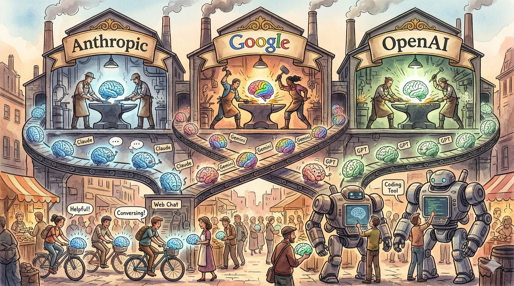
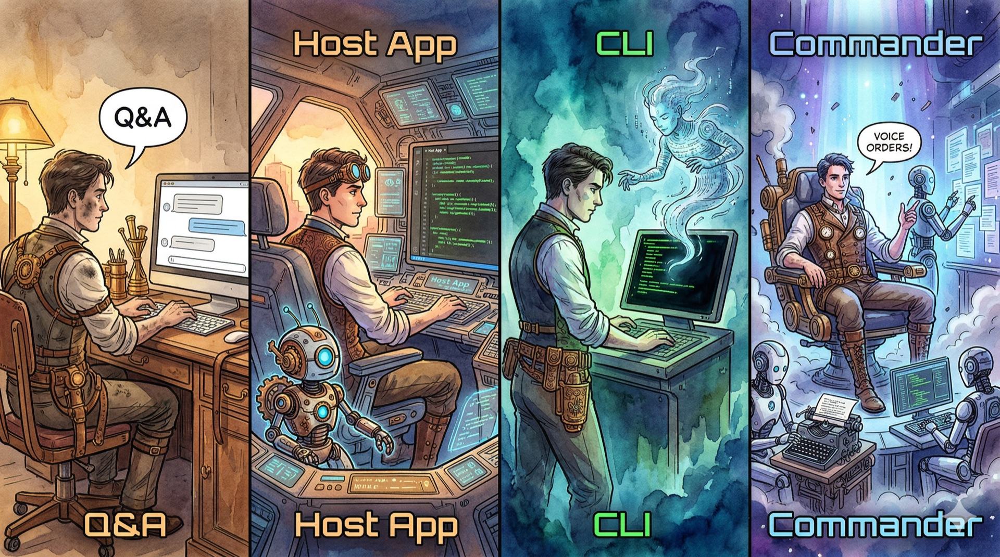

PT Bank Syariah Indonesia · Sabtu, 23 Mei 2026
Endy Muhardin · PT ArtiVisi Intermedia
Dua track lab paralel: Track BD (3-5 kelompok segmen) dan Track Planning & Portfolio (1 kelompok lintas-segmen)

| Provider | Free | Mid | Top |
|---|---|---|---|
| Anthropic (Claude) | Free | Pro $20/bln | Max $100 / $200/bln |
| OpenAI (ChatGPT) | Free | Plus $20/bln | Pro $200/bln |
| Google (Gemini) | Free | Pro $19.99/bln | Ultra $249.99/bln |
| z.ai (GLM) | — | Lite $48.6/3bln | Pro $194.4 / Max $432/3bln |
Data per Mei 2026. Harga dapat berubah sewaktu-waktu.
Sumber:
claude.com/pricing ·
chatgpt.com/pricing ·
one.google.com ·
z.ai

Contoh perintah yang bisa langsung dijalankan Claude:
Peserta tidak perlu install apa-apa, tidak perlu bawa laptop. Cukup hadir & siap eksplor.
| Format | Apa Itu | Jenis |
|---|---|---|
| Markdown (.md) | Teks dengan formatting ringan, mirip WhatsApp | Teks |
| CSV (.csv) | Tabel data — daftar prospek, data segmen, dst | Teks |
| HTML (.html) | Halaman web yang tampil di browser | Teks |
| JSON (.json) | Data terstruktur untuk mesin — AI yang handle | Teks |
| PDF, DOCX, PPTX, XLSX | File Word, PowerPoint, Excel, PDF | Biner |
# Brief Visit: Pesantren Sidogiri
## Profil Lembaga
Berdiri **1745**, pesantren tertua
di Jawa Timur.
- Santri: ~7.500 jiwa
- Unit: BPRS, koperasi, BMT
- Pengasuh: KH M. SalahuddinBerdiri 1745, pesantren tertua di Jawa Timur.
nama,segmen,kota,santri,unit_usaha,potensi
"Pesantren Sidogiri","pesantren","Pasuruan",7500,"BPRS,koperasi,BMT","tinggi"
"Pesantren Gontor","pesantren","Ponorogo",6000,"yayasan,koperasi","tinggi"
"Pesantren Lirboyo","pesantren","Kediri",5500,"koperasi","sedang"
"RS Islam Sultan Agung","rs-islam","Semarang",,"yayasan","tinggi"Excel mengerti CSV. Spreadsheet bisa langsung di-import.
<h1>Sosialisasi BSI
Pesantren Hub</h1>
<p>Dihadiri <strong>200
perwakilan</strong> pesantren
se-Jawa Timur.</p>
<ul>
<li>Materi: pembiayaan</li>
<li>MoU: 15 pesantren</li>
</ul>Dihadiri 200 perwakilan pesantren se-Jawa Timur.
AI yang kita pakai adalah Large Language Model (LLM) — dilatih dengan teks, berpikir dalam teks, menghasilkan teks.
PDF, DOCX, PPTX, XLSX, MP4, MP3, JPG, PNG
Output akhir untuk klien tetap dalam format Office
| Kebutuhan | Tool | Hasil untuk Anda |
|---|---|---|
| Konversi dokumen (DOCX, PPTX, PDF ↔ Markdown) | Pandoc | Pitch deck final, brief, laporan dalam format Office |
| Transkrip audio/video meeting | Whisper | Transkrip meeting prospek, di laptop, tanpa upload ke cloud |
| Buat diagram & chart | Mermaid CLI | Diagram struktur lembaga, alur produk, dst |
| Olah gambar (resize, crop, anotasi) | ImageMagick | Edit logo lembaga, sesuaikan ukuran untuk pitch deck |
| Baca teks dari scan / foto dokumen | Tesseract | Ekstrak isi dari brosur prospek, scan MoU, dst |
Semua tool dijalankan AI otomatis — kita cukup minta hasilnya.
| Kebutuhan | Yang AI Lakukan |
|---|---|
| Baca & analisis daftar prospek di Excel | Tulis program untuk buka file, hitung statistik, urutkan |
| Ambil data dari portal Kemenag / BPS / dst | Tulis program untuk buka web, ekstrak data, simpan ke CSV |
| Buat grafik distribusi prospek per segmen / provinsi | Tulis program untuk render chart, simpan ke PNG/PDF |
| Rapikan ratusan file brief lama | Tulis program untuk rename sesuai pola, pindah ke folder kategori |
| Hitung potensi pasar per segmen (rata-rata, total, sebaran) | Tulis program statistik, jalankan, sajikan hasil |
Kita tidak perlu bisa coding — AI yang menulis & menjalankan programnya.
Contoh: Akses portal pendataan yang perlu login (Kemenag, sistem internal BSI, dst)
Akan dilatih di Lab 1
Akan dilatih di Lab 2
Akan dilatih di Lab 3
Akan dilatih di Lab 4
Akan dilatih di Lab 5 (Track Planning & Portfolio)
Bonus use case — dipakai sebagai latihan mandiri pasca-workshop
segmen-pesantren-jatim/
├── input/ ← data awal (daftar prospek, materi BSI)
├── output/ ← hasil jadi (brief, pitch deck, laporan)
├── data/ ← kompilasi prospek (CSV)
├── referensi/ ← profil produk BSI, regulasi segmen
└── catatan/ ← log diskusi tim, decision log10:45 – 11:45 · 60 menit
| Tahap | Kegiatan |
|---|---|
| Pilih segmen | Tiap kelompok pilih 1 segmen: pesantren / sekolah Islam / RS Islam / masjid / ZISWAF / halal F&B / travel umrah / ormas / PT Islam |
| Riset prospek | Minta Claude cari 15–20 lembaga prospek di segmen tersebut. Kompilasi profil dasar masing-masing. |
| Pemetaan | Minta Claude petakan hubungan antar lembaga (induk ormas, jaringan alumni, dll) |
| Output | Spreadsheet prospek dengan profil + skor potensi awal |
12:45 – 13:30 · 45 menit
| Tahap | Kegiatan |
|---|---|
| Pilih prospek | Pilih 1 prospek prioritas dari hasil Lab 1 |
| Riset mendalam | Minta Claude gali profil lengkap: kepemimpinan, isu terkini, agenda strategis |
| Susun brief | Profil 1 halaman + talking points + pertanyaan discovery + follow-up plan |
| Output | Brief visit 2–3 halaman, siap dibawa ke pertemuan |
13:30 – 14:15 · 45 menit
| Tahap | Kegiatan |
|---|---|
| Pilih produk BSI | Pilih 1 produk BSI yang relevan untuk segmen kelompok |
| Adaptasi | Minta Claude susun pitch deck yang disesuaikan dengan profil segmen & prospek di Lab 2 |
| Refinement | Iterasi tone, contoh kasus, struktur cerita sesuai audiens segmen |
| Output | Pitch deck 8–12 slide dalam format PPTX, siap pakai |
14:30 – 15:00 · 30 menit
| Tahap | Kegiatan |
|---|---|
| Skenario | Asumsikan event peresmian / sosialisasi BSI di salah satu prospek segmen kelompok |
| Materi event | Minta Claude draft caption sosial media (IG, LinkedIn), foto caption |
| Materi pasca-event | Laporan internal 1 halaman + follow-up checklist + draft thank-you note |
| Output | Paket coverage event lengkap (caption + laporan + follow-up) |
Track paralel untuk Dept Planning & Portfolio · 4 sesi sejajar waktu Lab 1–4
| Slot | Sesi | Output |
|---|---|---|
| 10:45 – 11:45 | 5.1 Konsolidasi RKAP Lintas Segmen | Portfolio view + gap analysis + narrative Direksi |
| 12:45 – 13:30 | 5.2 Sintesis Insight Lintas Segmen | Tema lintas segmen + rekomendasi prioritas resource |
| 13:30 – 14:15 | 5.3 Materi Radir / Checkpoint | Deck eksekutif 8–10 slide untuk Direksi |
| 14:30 – 15:00 | 5.4 Monitoring & Early Warning | Monitoring report + action items per dept BD |
Data fiktif untuk kelompok Planning. Download & upload ke Claude saat sesi. Nama lembaga = lembaga publik, angka fiktif.
| File | Dipakai di | Isi |
|---|---|---|
| rkap-dept-1.xlsx | Sesi 5.1 | RKAP Dept 1 — Pesantren, Sekolah Islam, PT Islam |
| rkap-dept-2.xlsx | Sesi 5.1 | RKAP Dept 2 — RS Islam, Masjid, ZISWAF |
| rkap-dept-3.xlsx | Sesi 5.1 | RKAP Dept 3 — Halal F&B, Travel Umrah, Ormas |
| realisasi-q1-2027.csv | Sesi 5.4 | Realisasi vs target Q1 per 9 segmen |
| agenda-radir.md | Sesi 5.3 | Agenda Radir Direksi bulan berjalan |
3 file RKAP sengaja beda format/unit/periode — bagian dari latihan normalisasi di Sesi 5.1.
Seluruh output didistribusikan via shared folder di akhir workshop.
Klik untuk membuka PDF — bisa simpan ke device atau Files app:
Pegangan utama untuk semua peserta. Berisi 4 lab BD, Lab 5 Planning, prompt library, glossary, panduan ringkas.
Khusus pimpinan / pengamat yang ikut via iPad. 4 putaran dialog dengan kelompok lewat artifact yang dihasilkan AI.
→ rkap-dept-1/2/3.xlsx, realisasi-q1.csv, agenda-radir.md
Untuk kelompok Track Planning — detail di slide sebelumnya.
URL slide: artivisi.github.io/bsi-islamic-ecosystem-ai/
{
"nama": "Pesantren Sidogiri",
"santri": 7500,
"unit_usaha": [
"BPRS", "Koperasi", "BMT"
],
"isu_terkini": [
"rencana RS pesantren"
],
"last_visit": "2026-03-15"
}Detail lengkap, prompt template, dan contoh query — workbook §8
Untuk situs yang sulit diakses cara biasa:
AI menjalankan browser sungguhan otomatis. Kita login manual sekali — sesi tersimpan, AI lanjut ambil data sendiri.
Detail lengkap dan kombinasi JSON + Playwright — workbook §8
claude.ai/codePerlu paham GitHub dasar. Detail di workbook §11.
Pertanyaan, diskusi, dan sharing pengalaman.
Terima kasih — Endy Muhardin